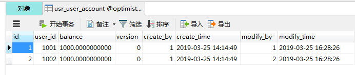
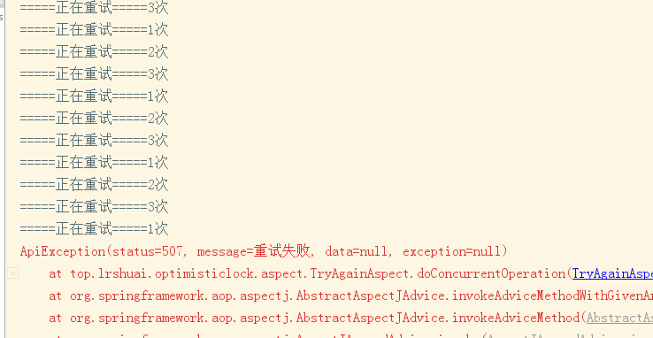

乐观锁重试机制代码实现
有乐观锁，那当然也是有悲观锁的
悲观锁和乐观锁的原理和应用场景
悲观锁(Pessimistic Lock)
顾名思义，就是很悲观，每次去拿数据的时候都认为别人会修改，所以每次在拿数据的时候都会上锁，这样别人想拿这个数据就会block直到它拿到锁。传统的关系型数据库里边就用到了很多这种锁机制，比如行锁，表锁等，读锁，写锁等，都是在做操作之前先上锁。
乐观锁(Optimistic Lock)
顾名思义，就是很乐观，每次去拿数据的时候都认为别人不会修改，所以不会上锁，但是在更新的时候会判断一下在此期间别人有没有去更新这个数据，可以使用版本号等机制。乐观锁适用于多读的应用类型，这样可以提高吞吐量，像数据库如果提供类似于write_condition机制的其实都是提供的乐观锁
应用场景
悲观锁：
比较适合写入操作比较频繁的场景，如果出现大量的读取操作，每次读取的时候都会进行加锁，这样会增加大量的锁的开销，降低了系统的吞吐量。
乐观锁：
比较适合读取操作比较频繁的场景，如果出现大量的写入操作，数据发生冲突的可能性就会增大，为了保证数据的一致性，应用层需要不断的重新获取数据，这样会增加大量的查询操作，降低了系统的吞吐量。
总结：两种所各有优缺点，读取频繁使用乐观锁，写入频繁使用悲观锁。
代码实现原理
这里采用版本号的方式
简单例子表结构
CREATE TABLE `usr_user_account` ( |
比如现在表中有两条数据

现在 user_id = 1001 给 user_id=1002 转账 50 元
转账，无非就是一加一减，我就不啰嗦了，先看完整代码实现 如下
|
代码不算多
只需要看 updateAccount 方法中的 userAccountMapper.updateAccount 这个方法，这个方法也就是 乐观锁 实现的原理, mapper 如下：
<update id="updateAccount" parameterType="top.lrshuai.optimisticlock.usr.entity.UserAccount"> |
重点看 version 的变化
第一点： 更新条件 要匹配 version=上一次数据的version
第二点： 就是 更新成功的时候，把 version + 1
注意：当数据表有一个写锁时，其它进程的读写操作都需等待读锁释放后才会执行。所以保证了version的正确性
乐观锁实现就是这么简单
如果说 更新失败了，那我们就抛异常，这样用户体验不是非常好，所以就有了重试机制
1、重试原理，利用到AOP 切片，然后通过 @Around 进行方法增强。
为了方便，创建一个自定义注解，在需要重试的方法上添加 注解即可
@IsTryAgain
重试注解
/** |
TryAgainException
重试异常
public class TryAgainException extends ApiException { |
TryAgainAspect
|
现在，反回去看上面的UserAccountService 或许就是知道什么意思了，和平常写的业务代码一样，唯一多的只是一个 @IsTryAgain 注解而已
重试可以，但是不能无限重试吧，所以也是会有重试失败的时候，如果你给它重试次数越多，失败就越少，我这里为了演示只有3次机会。
测试类，测试
(SpringRunner.class) |
结果如下：
